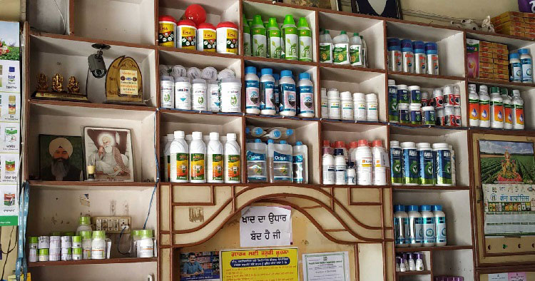
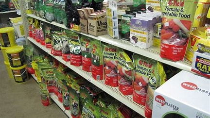
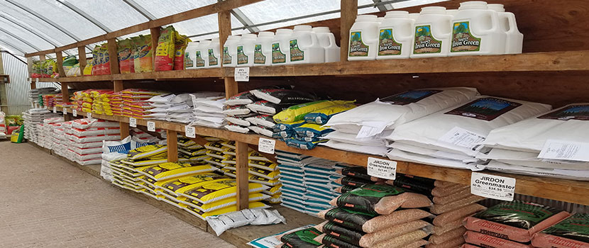

ABOUT



- Welcome to DHANALAKSHMI fertilizers and pesticides, your one-stop destination for all your fertilizer needs.
We are dedicated to providing high-quality fertilizers and expert advice to help you achieve healthy and thriving
plants, gardens, and landscapes. Here is some information about our fertilizer shop that you may find helpful:
- Mission Statement:
At DHANALAKSHMI fertilizers and pesticides, our mission is to empower gardeners, farmers, and plant enthusiasts
with the best fertilizers and knowledge to optimize plant growth and productivity.
We strive to offer a wide range of top-notch fertilizers while promoting sustainable and environmentally friendly practices.
- Expertise:
Our team consists of experienced horticulturists and agricultural experts who are passionate about plants and
dedicated to helping you succeed in your gardening or farming endeavors. We stay updated with the latest
advancements in fertilization techniques and are always ready to provide personalized advice and recommendations.
- Product Range:
We stock a comprehensive selection of fertilizers tailored to meet the specific needs of various plants, crops,
and soil types. Our inventory includes organic fertilizers, synthetic fertilizers, slow-release fertilizers,
liquid fertilizers, and specialty blends. We source our products from reputable manufacturers to ensure their quality and effectiveness.
- Customer Service:
Customer satisfaction is our top priority. We aim to provide a friendly and helpful shopping experience for everyone
who visits our shop. Our staff is available to answer your questions, offer guidance, and assist you in
finding the right fertilizers for your specific needs. We believe relationships with our customers based on trust, integrity, and reliability.
- Store Location:
BODDU CHINTHALPALLI, MDL:GEESUKONDA,DIST:HANAMKONDA STATE: TELANGANA,PIN: